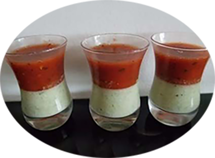

Verrine de mousse concombre chèvre
tomate basilic

Pour 6 personnes
Préparation : 10 mn
Repos
Ingrédients
- 1 concombre
- 1 petite boite de tomates pelées dans son jus
- basilic
- ciboulette
- 3 g d’agar agar
- sel
- poivre
Recette
- Laver le concombre et l’éplucher en laissant une bande de peau sur deux.
- Couper le concombre en deux dans le sens de la longueur et enlever les pépins à la petite cuillère.
- Mixer le concombre avec 20 cl d’eau
- Mettre le mélange dans une casserole avec 2 g d’agar agar,
bien remuer et porter à ébullition pendant 30 secondes.
- Ajouter ensuite le fromage de chèvre réduit en purée et bien mélanger.
- Attendre que le fromage ait fondu puis ajouter de la ciboulette, le sel et le poivre
- Verser la préparation dans les verrines et laisser refroidir
- Mixer les tomates pelées avec 20 cl d’eau. Saler et poivrer et ajouter le basilic
- Verser le mélange dans une casserole avec 1 g d’agar agar.
Bien remuer puis porter à ébullition pendant 30 secondes
- Verser le mélange au dessus dans les verrines au dessus de la mousse de concombre.
- Afin de ne pas briser la fine couche gélifiée de mousse de concombre,
je vous conseille de verser le mélange sur une petite cuillère disposée au dessus de la verrine
|